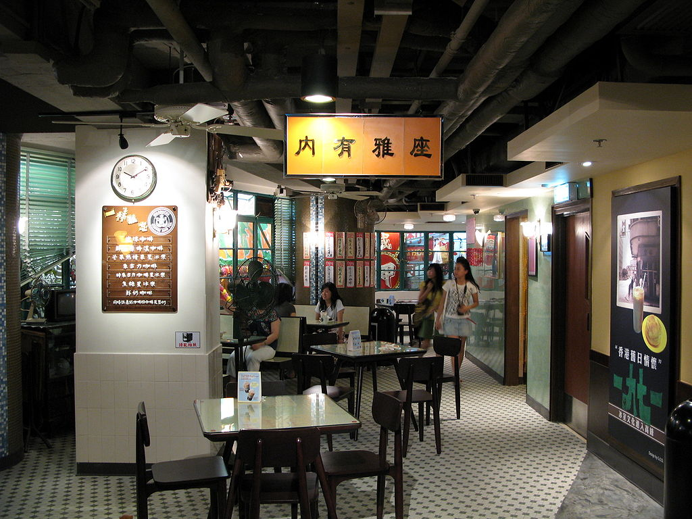
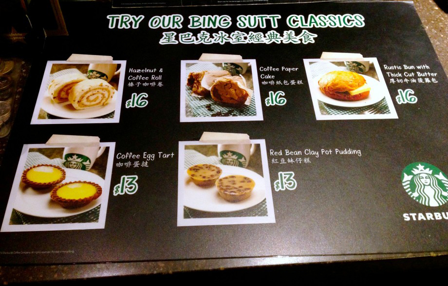
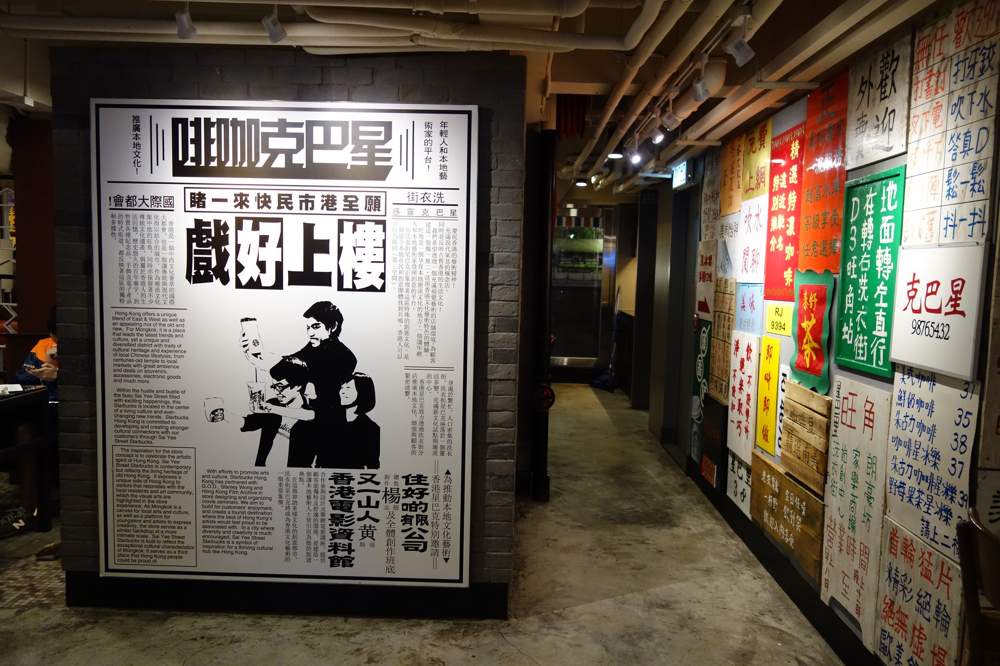
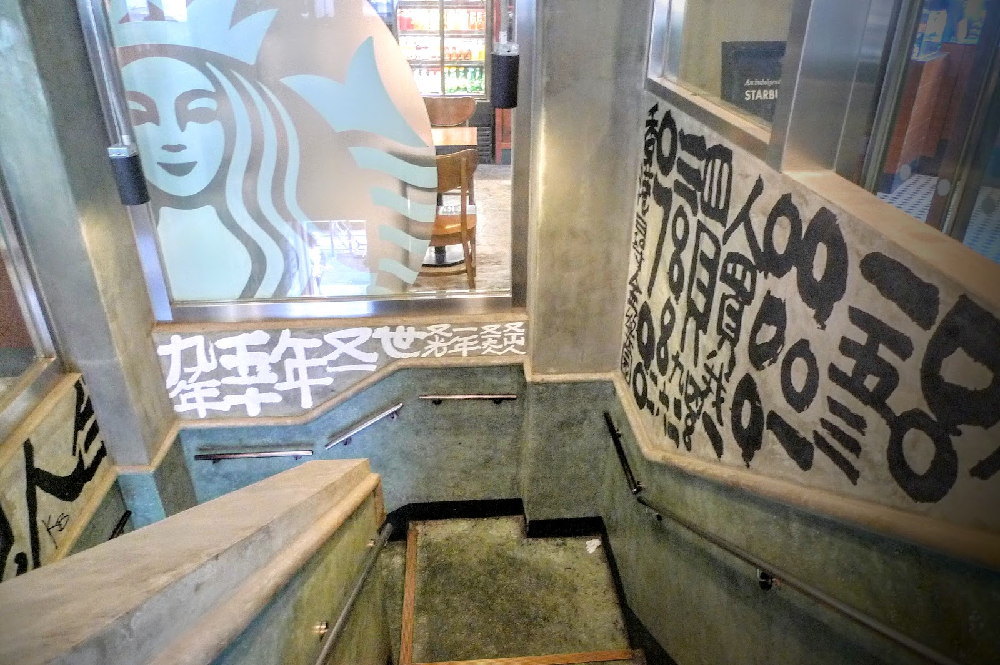
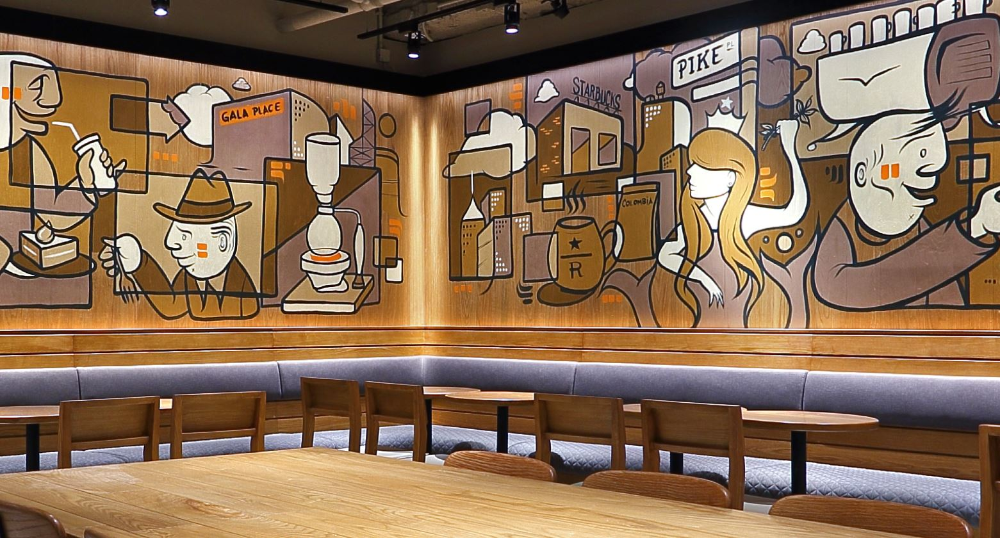
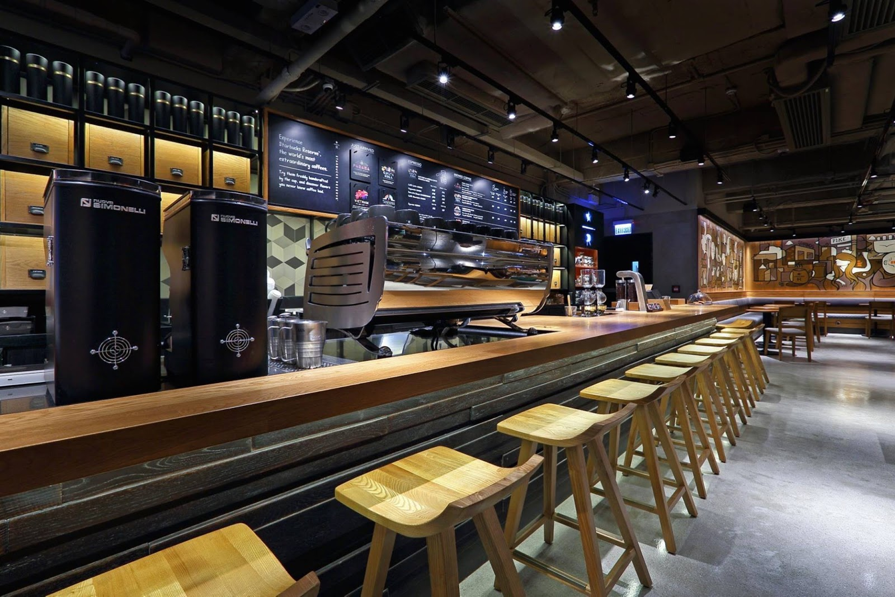

No matter where you are in the world, your average Starbucks joint is the same thing everywhere – sterile and bland, throwing out local flavours for the sake of global conformity.
But these three Starbucks concept stores in Hong Kong are a little different from the rest, incorporating the city’s unique cultural history as well as the work of local artists and designers.
They’re a vastly superior experience to the chain’s usual outlets, and definitely worth a detour for the curious.
50s Nostalgia at Duddell Street, Central

This throwback concept store is designed after a type of ’50s Hong Kong-style cafe known as a bing sutt, a precursor to the modern cha chaan teng. Literally meaning ‘ice room’, the bing sutt was a simple, traditional eatery where customers could enjoy coffee, tea, iced drinks, and snacks.
The guys at Starbucks have pulled off a very impressive and detailed recreation, incorporating old-school diner booths, tiled floors, folding stools, traditional windows with brass latches, retro fans to remind us of the days of yore without AC, and Chinese-only menus on the walls (don’t worry, there is a paper version in English).

To enhance the authenticity, the menu features local Hong Kong snacks with coffee-themed twists, such as coffee egg tarts, coffee paper cake, red bean pudding, and sweet pumpkin soup with sago.
Shop M2, Mezzanine Floor, Baskerville House, 13 Duddell Street, Central, Hong Kong, +852 2523 5685
Vintage Movies at Sai Yee Street, Mongkok

The store celebrates Hong Kong’s storied film industry, partnering with local artists to create a vibrant and retro-themed concept store that pays homage to the city’s century-old movie industry and its reputation as the ‘Hollywood of the East’. With 6,000 sq. ft. of floor space, it’s one of the largest Starbucks branches in Hong Kong.

To create this space, Starbucks collaborated with celebrated Hong Kong artist Stanley Wong and the local lifestyle brand G.O.D. At the entrance, a set of narrow steps leads customers up to the store’s first floor, with distinctive calligraphic graffiti adorning the staircase walls. Inside, you’ll see collages of old movie posters and advertisements, with retro tiled floors, exposed ceilings and quirky splashes of color on the walls for extra character. On the top floor, there’s even a small theater where seminars and screenings can be held, including free events organized in partnership with the Hong Kong Film Archive.
Lastly, this is one of the few Starbucks branches in the city to stay open until midnight from Sunday through Thursday and until 1 o’clock in the morning on Fridays and Saturdays.
1/F and 2/F, Wai Kee House, 91 Sai Yee Street, Mongkok, Hong Kong, +852 2789 8710
Starbucks Reserve Coffee Experience Bar at Gala Place, Mongkok

Located in the basement of Gala Place, this 4,500-sq.-ft. coffee shop is dedicated to Starbucks’ most exclusive, top-of-the-line roasts for coffee aficionados. They’ve put just as much thought into the interior, which proudly exhibits work from local artists. These include a wall mural by the entrance by Bao Ho and another mural in the shop proper, created by artist Stern Rockwell. (above) Other wall adornments include retro posters and stenciled wall art.

The slow coffee bar features an open kitchen with a Black Eagle Espresso machine. Apart from the premium Reserve brews, exclusive desserts such as custard cream croissants are available. In addition, the store features a ‘Community Corner’ near the back, with audiovisual equipment for performances and live events.
Shop B01 Basement Gala Place, 56 Dundas St, Mongkok, Hong Kong, +852 2613 2921